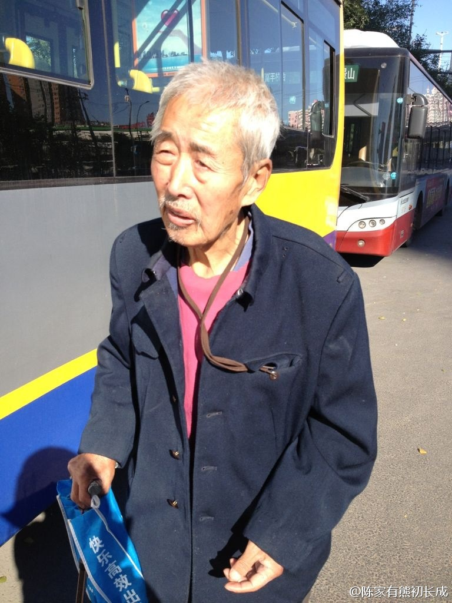
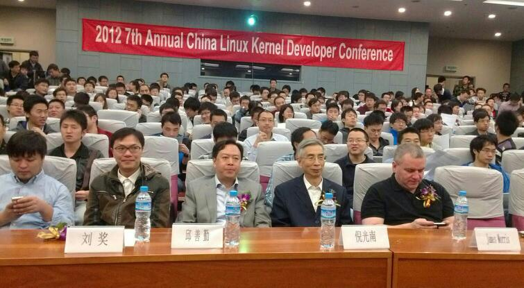

中学同学最近住我家，昨天回来后就要我试她的裤子与鞋子，并勒令我在找出件黑色衬衣与之搭配，说她买的时候就觉得适合我穿，并说看不惯我平时穿着，太各色。而她的推荐，上班休闲都适合，而且不会错。我说，这类中规中矩的白领装，恰恰是我不喜欢的风格。
给女儿下个。//@可爸文波:是用这个app画的，很酷的应用，网页链接 @郑家小瓜 @阿斯龙pd @Ada李力@文波FZ:兴起，用iPad临摹了一幅丰子恺的画：流光容易把人抛，红了樱桃，绿了芭蕉。[呵呵]
回复@眼筝筝helen:我现在知道了，即使啥也没说，啥也没做，有人就是看不惯。原来是衣服的问题。@Ada李力:中学同学最近住我家，昨天回来后就要我试她的裤子与鞋子，并勒令我在找出件黑色衬衣与之搭配，说她买的时候就觉得适合我穿，并说看不惯我平时穿着，太各色。而她的推荐，上班休闲都适合，而且不会错。我说，这类中规中矩的白领装，恰恰是我不喜欢的风格。
有段时间，我给自己狂买东西，给明俊的理由是：＂我要对自己好一些＂。明俊嗤之以鼻：＂你对自己还不够好吗？＂。和他相比，我算是对自己好的，但还不够。深层意识中，我总觉得自己不应该享用最好的东西，所以，在用品选择上，总有种凑和，过得去就行的态度。这得改改。
姐姐今年十一期间去参加了大学二十年校友会，回来后很开心。我前段时间知道本科同学也开始筹备校友会，明年恰好还是东北大学百年校庆，却也不期待，自己是否参加也是无可无不可。姐姐一度说我寡情。可我只是觉得，仅凭同乡或者校友的联系，就觉得一定要有特别的感情，那才叫古怪呢。
二十年让大学同学之间的差异更明显。道听途说的例子得出个规律，我们那一代学生，目前有钱或者称为成功的那些人，往往是班里的落后分子或异类。但想想也没什么奇怪的，正因异类不被主流所接纳，这些人倒在这剧烈变动的三十年里抓住了主流人士看不上的机会。例如，最早的万元户不少是劳改释放人员。
现在说起孩子教育，有个话题必谈：你以后会让孩子出国吗？我没移民的打算，孩子的事情让孩子自己决定。父母要做的，就是不要限制孩子的视野，舞台可以是世界性的，中国也是舞台的一部分。即使移民，不是仅为逃离，而是为寻求更广天地或者更好人生。
＜童年的消逝＞中提到童年概念出现在印刷术普及之后，因为儿童要通过学习和教育等努力，获得理性思维，自我控制等能力后才进入成人世界。而且，这一过程无法跨越，因为知识获得有壁垒，而且这壁垒是成人控制的。例如，对性的了解。
<童年的消逝＞中提到对童年的两种对立观点。洛克认为儿童是白纸，可以将其塑造成预定的成人。卢梭认为儿童是人类最接近自然状态的人生阶段，有着与生俱来的好奇心，纯真，可爱，充满活力，这些不应被扼杀。- 卢梭的观点更被广为接受，是一件幸事。
离我住处很近。帮转。 //@逆戟擎天: 转发微博@陈小圆儿:#谁家老人丢了#在富丰桥办事，下车遇到一迷路老人，老人名叫殷文达，78岁，家住石景山老山附近，早晨出来锻炼身体坐错车找不到家了，坐到总站被司机轰下来没人管，老人有点迷糊，出来一天什么也没吃，给买了点吃的和水，已报警，在路边等警察。 
我妈妈有个旧事，她年轻时去武汉出差，在一家饭馆要了份饭后，没吃饱，不好意思再要。于是出来再找馆子，最后在第三家饭馆吃饱了。@老赵:我每次打电话订砂锅粥都说两个人两斤虾，每次对方就说两斤太多了会吃不下，要不一斤吧，我说就两斤。其实我已经顾及你们面子没有告诉你是我一个人来吃了好不好？
这是一次非常多样化的技术活动，聚合了政府，科技协会，科研机构，国外大IT公司，国内有实力民企，包括设备公司，互联网公司，以及草根社区。真该去现场看看。@刘明1227:骇客大聚会！2012中国Linux内核开发者大会在COPU联盟的指导下今天成功召开，前排是联盟主席邱善勤博士，联盟专家委副主任倪光南院士，华为刘奖，Linux Kernel Security Subsystem维护者-Oracle的Morris。联盟专家委委员刘明博士报道:-) 
小伙 vs 女孩， 商业 vs 生活 //@陈果_George: 上周高铁上听了邻座一个小伙子30分钟的电话，其中聊到了：报价、客户、项目、报价、客户、项目、报价、客户、项目、报价、客户、项目、报价、客户、项目、报价、客户、项目、报价、客户、项目、报价、客户、项目、报价、客户、项目、报价、客户、---:该账号因被投诉违反《微博社区公约》的相关规定，现已无法查看。查看帮助 网页链接
能做好#社区运营#的会是好的管理人员//@钱钰: 原来和运营网站道理想通，我们一旦发现员工不会做事，就拉过来自己做 这和社区里网友不发帖，就自己转帖充数是一个道理，如果没有做好用户的培养，就靠转帖支撑并不长久//@善良的澎湃: 跟社区运营一样，一方面工作内容问题，另一方面招募/发现/培养达人问@钱钰:管理是什么？管理是一级一级帮助员工解决问题的执行理念，还是怎样识别人、重用人、激励人、带领团队共同提高的处事艺术？你怎么看？
这也是#社区运营#的死穴，很难量化衡量。可以这么量化吗，我40%地喜欢你，或者60%地支持你吗？@姐夫李:做了十多年公关，一直没有解决量化衡量Measurement这个问题，以前搞大活动雇调查公司访问客户反馈，后来觉得这太矫情太花费用。领导和客户的主观评价，企业声誉的长期持续上升都是衡量，但是做不到广告那样每一个Campaign都有量化。量化是公关的死穴，一攻一个准。
真励志，可俺怎么对花裤头印象更深刻呀。 //@北京柳红: 三十岁之前那张真是你？天翻地覆啊！在你身上，在每个跑者身上，都见证了跑步之美。@飞轮申桐:我也发个励志贴，30岁之前（左）和30岁之后（右）。哥会火不？
相信这个判断，#社区运营# 领域会有方法论和理论体系。现有的从业人员都是探索者。//@互联网信徒王冠雄: 我认为下一个阶段，将是运营经理的天下。有空我开个专题谈。@金错刀 //@David刘洪涛：同意关于阶段的看法，目前是产品经理的天下，是因为产品还不够多，产品创造的成本高！---:该账号因被投诉违反法律法规和《微博社区公约》的相关规定，现已无法查看。查看帮助 网页链接
国内教育界没有立法或者规矩，来避免正常教学秩序受到商业的侵袭。之前做技术推广，在国内各大院校都是"SUN大学日"，很多院校都很欢迎，有时校长或系主任还来致辞。但在香港大学碰了钉子，校方说，不许出现公司名，我们改成"开源技术日"才得以成行。@Ada李力:姣姣的"中华文化小大使"试卷是学校老师发下来的。上面竟然有这么一题目: 雪铁龙轿车是属于那个国家的品牌? - NND, 俺孩子上学做卷子还得记广告么?
妹妹住美国佛罗里达洲，邻居有位四岁的小妹妹，喜欢上一个九岁的小子，每次见到那小子，妹妹就百般扭捏。有次那小子要路经妹妹家，妹妹从窗口远远瞧见，先去找妈妈的口红涂了嘴唇，然后走出房门扮邂逅。当时我惊奇四岁的孩子，哪里来的这种意识呢?
对孩子早恋，父母强压或者极力反对，往往还会起到反作用。//@李建中心理咨询师:初中谈也不少见，虽然很多其实只是友谊。父母给的爱，精神上的爱越少，恋爱越早，这是心理规律。 //@Ada李力:偶也觉得高中可以谈恋爱。---:抱歉，作者已设置仅展示半年内微博，此微博已不可见。